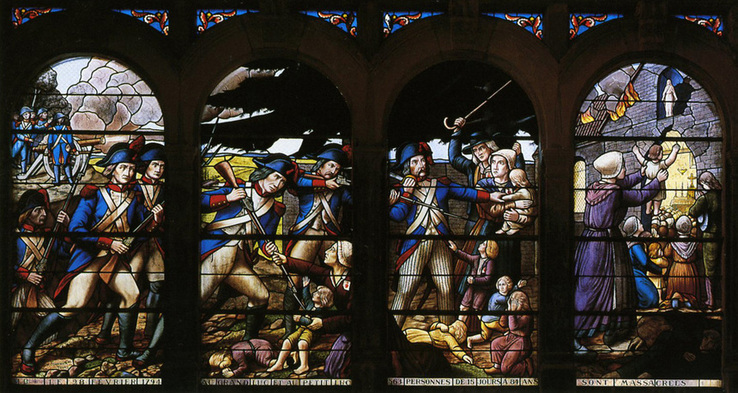
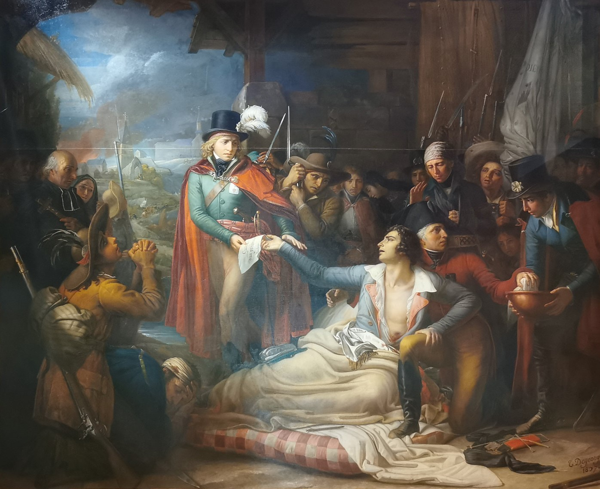
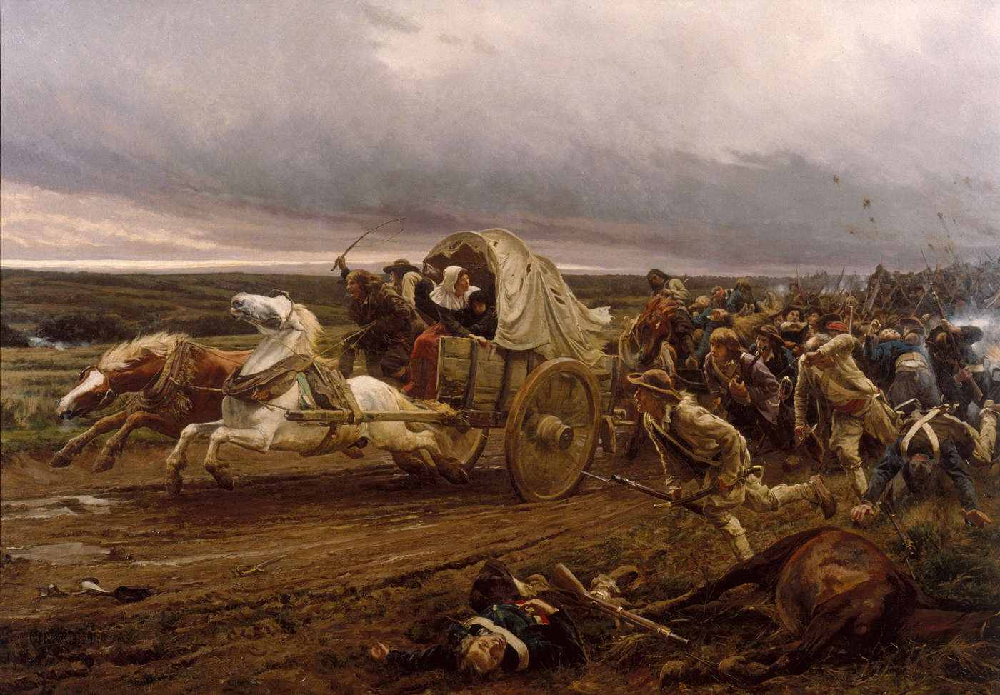
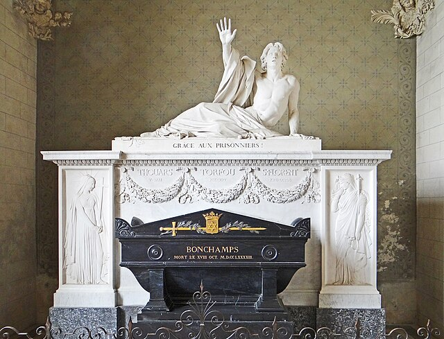

Découvrez ci-dessous des ouvrages sur les guerres et le génocide vendéen
1 - Bibliographie
- 21 ans ? Pensez PassCulture !
"Guerre de la Vendée et des chouans" par Joseph-Marie Lequinio
Cet ouvrage est l’un des premiers textes consacrés aux événements de la "guerre de Vendée". Son auteur, Joseph-Marie Lequinio, député révolutionnaire du Morbihan à la Convention nationale, y expose sa vision des causes et du déroulement de l’insurrection dans l’Ouest de la France.
Le livre prend la forme d’un mémoire politique, dans lequel l’auteur rassemble différents documents, lettres et témoignages concernant la guerre. Il évoque notamment les violences commises dans la région et critique certains excès des troupes républicaines.
Écrit au cœur même de la Révolution française, cet ouvrage constitue aujourd’hui un témoignage intéressant sur la perception des événements par certains acteurs révolutionnaires, bien que son interprétation reste marquée par le contexte politique de l’époque.
"Les mémoires de la marquise de La Rochejaquelein" par Victoire de Donnissan de la Rochejaquelein
Dans ces mémoires célèbres, Victoire de Donnissan, marquise de La Rochejaquelein, raconte son expérience personnelle durant les guerres de Vendée.
Épouse du général vendéen Louis de Lescure, puis du chef vendéen Henri de La Rochejaquelein, elle fut témoin direct des événements qui marquèrent l’insurrection royaliste de l’Ouest de la France.
Son récit décrit la vie quotidienne des insurgés, les combats, les fuites, les souffrances des populations et la foi qui animait de nombreux Vendéens durant cette guerre civile. Elle y évoque également la mort de plusieurs chefs vendéens et les difficultés rencontrées pendant la Virée de Galerne.
Publié pour la première fois au début du XIXᵉ siècle, cet ouvrage constitue aujourd’hui l’un des témoignages les plus connus et les plus précieux sur les "guerres de Vendée".
"Les mouchoirs rouges de Cholet" (Roman historique) par Michel Ragon
Dans ce roman historique, l’écrivain vendéen Michel Ragon s’inspire des événements de la guerre de Vendée pour raconter le destin de plusieurs personnages plongés dans ce conflit qui oppose insurgés vendéens et armées républicaines.
À travers une narration romancée, l’auteur évoque les combats, les souffrances des populations et les divisions provoquées par cette guerre civile dans l’Ouest de la France.
Le titre fait référence à une tradition selon laquelle certains combattants vendéens auraient porté des mouchoirs rouges afin de se reconnaître sur le champ de bataille.
Bien que reposant sur un contexte historique réel, l’ouvrage reste une fiction, mêlant éléments historiques et récit romanesque.
"La Vendée-Vengé : Le génocide franco-français" par Reynald Secher
Dans cet ouvrage, l’historien Reynald Secher étudie les événements survenus en Vendée pendant la Révolution française, notamment la lourde répression menée par les armées républicaines contre les populations insurgées.
À partir d’archives et de documents historiques, l’auteur développe la thèse selon laquelle les violences commises en Vendée entre 1793 et 1794 pourraient légitimement être qualifiées de génocide.
L’ouvrage reste aujourd’hui l’une des publications les plus connues dans le débat sur la nature des violences commises durant les guerres de Vendée.
"Par principe d'humanité... La Terreur et la Vendée" par Alain Gérard
Dans cet ouvrage, l’historien Alain Gérard, spécialiste des guerres de Vendée, s’intéresse à la période de la Terreur et à la répression menée dans l’Ouest de la France contre les insurgés vendéens.
À partir de nombreuses archives et sources historiques, l’auteur analyse les décisions politiques prises par le gouvernement révolutionnaire et les actions menées par les autorités républicaines dans la région.
Le livre étudie notamment les violences commises durant cette période ainsi que les justifications avancées par les responsables révolutionnaires, souvent présentées comme nécessaires et même humanistes "par principe d’humanité" pour mettre fin à "la guerre civile".
Cet ouvrage constitue aujourd’hui une étude historique importante sur la répression en Vendée et sur le fonctionnement de la Terreur dans l’Ouest de la France.
"La désinformation autour des guerres de Vendée et du génocide vendéen" par Reynald Secher
Dans cet ouvrage, l’historien Reynald Secher s’intéresse aux débats et aux controverses entourant l’interprétation des guerres de Vendée.
L’auteur analyse la manière dont ces événements ont été présentés dans certains travaux historiques, dans les médias ou dans l’enseignement, et critique ce qu’il considère comme une désinformation ou une minimisation des violences commises durant la répression menée par les armées républicaines.
À travers l’étude de documents et de débats historiographiques, Reynald Secher défend l’idée que les événements de 1793-1794 en Vendée doivent être reconnus comme un génocide, et il répond aux critiques adressées à cette thèse.
"Vendée 1793" par Michel Perraudeau
Dans cet ouvrage, l’auteur Michel Perraudeau retrace les principaux événements de l’insurrection vendéenne qui éclate en 1793 dans l’Ouest de la France.
Le livre revient sur les causes du soulèvement, la formation de l’Armée catholique et royale, ainsi que sur les grandes batailles qui opposèrent les insurgés vendéens aux troupes républicaines.
À travers un récit accessible et synthétique, l’auteur présente les principaux acteurs de cette guerre civile et les événements marquants qui ont façonné l’histoire de la Vendée pendant la Révolution française.
Cet ouvrage propose ainsi une introduction claire aux guerres de Vendée et à leurs enjeux historiques.
"Vendée : Du génocide au mémoricide" par Reynald Secher
Dans cet ouvrage, l’historien Reynald Secher s’intéresse à la manière dont les événements des guerres de Vendée ont été interprétés et transmis dans l’histoire française.
L’auteur reprend sa thèse selon laquelle les violences commises en Vendée durant la Révolution française peuvent être considérées comme un génocide, et il développe l’idée qu’un "mémoricide" aurait ensuite été opéré, c’est-à-dire une forme d’effacement ou de marginalisation de ces événements dans la mémoire collective et dans l’enseignement de l’histoire.
À travers l’étude de documents, de débats historiographiques et de l’évolution du discours historique, Reynald Secher analyse la place accordée aux guerres de Vendée dans la mémoire nationale.
"L'empreinte de la guerre de Vendée" par le CVRH (Centre Vendéen de Recherches Historiques)
Cet ouvrage collectif s’intéresse aux conséquences durables des guerres de Vendée dans l’histoire, la mémoire et le territoire.
À travers les travaux de plusieurs historiens et chercheurs, le livre analyse l’impact du conflit sur la société locale, les paysages, la mémoire collective ainsi que sur la transmission de cet épisode dans l’histoire de France.
Issu d’un colloque scientifique, l’ouvrage propose différentes approches historiques et permet de mieux comprendre comment les événements de 1793-1796 ont marqué durablement la région et son identité.
Ce livre constitue ainsi une étude approfondie sur l’héritage historique et mémoriel des guerres de Vendée.
"Vendée (1793-1794) - Crime de guerre ? Crime contre l'humanité ? Génocide ? Une étude juridique" par Jacques Villemain
Dans cet ouvrage, le juriste et diplomate Jacques Villemain analyse les événements de la répression menée en Vendée entre 1793 et 1794 à travers le prisme du droit international et du droit pénal moderne.
En s’appuyant sur des documents historiques et sur les catégories juridiques contemporaines, l’auteur examine si les violences commises durant cette période pourraient être qualifiées de crime de guerre, de crime contre l’humanité ou de génocide.
L’étude propose ainsi une approche juridique du conflit vendéen et s’inscrit dans le débat historiographique et mémoriel sur la nature des crimes commis durant les guerres de Vendée.
Cet ouvrage constitue une contribution importante au "débat" sur l’interprétation juridique et historique des événements de 1793-1794.
"Génocide en Vendée" par Jacques Villemain
Dans cet ouvrage, le juriste et diplomate Jacques Villemain revient sur les événements survenus en Vendée durant la Révolution française, en particulier sur la répression menée par les armées républicaines entre 1793 et 1794.
À partir de sources historiques et d’une analyse fondée sur le droit international, l’auteur examine les violences commises dans la région et développe l’idée que celles-ci pourraient être interprétées comme un génocide au regard des critères juridiques modernes.
L’ouvrage s’inscrit dans le "débat" historique et juridique autour de la nature des crimes commis durant les guerres de Vendée et prolonge les recherches que Jacques Villemain avait déjà menées dans ses travaux précédents.
Ce livre propose ainsi une approche juridique approfondie de cet épisode de la Révolution française.
"Guerres de Vendée : la mémoire du vitrail" par Nicolas Delahaye, Jean-Louis Sarrazin et Olivier Du Boucheron
Dans cet ouvrage, les auteurs Nicolas Delahaye, Jean-Louis Sarrazin et Olivier Du Boucheron s’intéressent à la manière dont les guerres de Vendée ont été représentées et transmises à travers l’art du vitrail.
Le livre étudie les vitraux présents dans différentes églises et monuments de l’Ouest de la France, qui évoquent les combats, les chefs vendéens ou les souffrances vécues pendant cette période troublée de la Révolution française.
À travers l’analyse de ces œuvres, les auteurs montrent comment l’art religieux et commémoratif a contribué à entretenir la mémoire des guerres de Vendée et à transmettre cet épisode de l’histoire locale aux générations suivantes.
Cet ouvrage propose ainsi une approche originale du conflit vendéen, en explorant la place de la mémoire et de la représentation artistique dans la construction du souvenir historique.
"La mémoire des guerres" par Kilian Jonet
Dans cet ouvrage, l’historien Kilian Jonet s’intéresse à la manière dont les guerres de Vendée ont été perçues, racontées et transmises au fil du temps.
Le livre explore la construction de la mémoire historique autour de ce conflit de la Révolution française, en étudiant les récits, les commémorations et les représentations qui ont contribué à façonner l’image de ces événements.
L’auteur analyse également les débats historiographiques et les différentes interprétations qui ont marqué l’étude des guerres de Vendée.
Cet ouvrage propose ainsi une réflexion sur la mémoire collective et la transmission de l’histoire de ce conflit dans la société française.
"La Vendée : Carrefour de l'histoire de France" par Charlotte de Villiers
Dans cet ouvrage, Charlotte de Villiers propose une réflexion sur la place particulière qu’occupe la Vendée dans toute l’histoire de France. L’objectif du livre n’est pas de raconter une nouvelle fois l’histoire complète de la région, mais plutôt de montrer comment les événements, les personnages et les traditions vendéennes ont influencé l’histoire nationale.
À travers différentes périodes historiques, l’auteure met en lumière le rôle de la Vendée comme un véritable carrefour historique, marqué par de nombreux épisodes importants, notamment durant la Révolution française et les guerres de Vendée.
L’ouvrage propose ainsi une approche synthétique de l’histoire vendéenne et de son influence sur la mémoire et l’identité françaises.
"Punir et détruire en Vendée : La justice d'exception en guerre civile" par Anne Rolland-Boulestreau
Dans cet ouvrage, l’historienne Anne Rolland-Boulestreau, spécialiste de la Révolution française et des guerres de Vendée, étudie le fonctionnement de la justice d’exception mise en place par les autorités révolutionnaires entre 1793 et 1794.
À partir de nombreuses archives locales et judiciaires, l’auteure analyse la manière dont les tribunaux révolutionnaires, les commissions militaires et les comités révolutionnaires ont participé à la répression dans les territoires insurgés. Elle montre comment ces institutions ont été mises en place dans un contexte de guerre civile, où la justice devient un instrument de lutte contre les révoltés vendéens.
L’ouvrage s’intéresse notamment aux arrestations, aux conditions de détention des prisonniers et aux condamnations prononcées, ainsi qu’au fonctionnement concret de cette justice extraordinaire dans les départements de l’Ouest.
Ce livre propose ainsi une analyse approfondie des mécanismes de la répression judiciaire pendant la guerre de Vendée, en étudiant les pratiques réelles des institutions révolutionnaires et les effets de la guerre civile sur l’application du droit.
"Quand la République tua la France : Génocide vendéen" par Le Royaliste Navarrais
Dans cet ouvrage, publié sous le pseudonyme "Le Royaliste Navarrais", l’auteur aborde les guerres de Vendée et la répression menée dans l’Ouest de la France durant la Révolution française. Le livre présente les massacres en Vendée et défend l’idée que les violences commises en 1793-1794 contre les populations vendéennes peuvent être qualifiées de génocide.
L’auteur revient sur les décisions politiques prises par le gouvernement révolutionnaire, sur les opérations militaires menées dans la région et sur les conséquences humaines de ce conflit.
Cet ouvrage propose une lecture un peu plus militante des guerres de Vendée.
"Louis de Frotté - Le Chouan Normand" par Éric Leclercq
Dans cet ouvrage, l’auteur Éric Leclercq retrace la vie et le parcours de Louis de Frotté, l’un des principaux chefs de la chouannerie en Normandie pendant la Révolution française.
Le livre revient sur son engagement royaliste, l’organisation de la résistance contre les autorités révolutionnaires et les combats menés dans l’Ouest de la France à la fin du XVIIIᵉ siècle.
À travers ce portrait, l’auteur évoque également le contexte plus large des insurrections royalistes de l’Ouest, notamment les liens entre la chouannerie et les guerres de Vendée.
Cet ouvrage permet ainsi de mieux comprendre le rôle de Louis de Frotté dans l’histoire des mouvements contre-révolutionnaires et dans la lutte royaliste de cette période.
2 - Films et documentaires
"Chouans !" Film historique réalisé par Philippe de Broca, sorti en 1988
Ce film se déroule pendant la chouannerie de 1793, dans l’Ouest de la France. L’histoire suit une jeune femme qui se retrouve au cœur du conflit entre deux hommes qu’elle aime, l’un partisan de la République et l’autre engagé dans la cause royaliste. À travers cette intrigue romanesque, le film montre la guerre civile qui oppose les insurgés chouans et les troupes révolutionnaires.
Où le visionner ?
- DVD / Blu-ray
- Amazon Prime Video
- Canal VOD (selon disponibilité)
NB : Les listes « Où le visionner ? » présentes sur cette page ne sont pas exhaustives.
"Vent de galerne (1793)" Film historique réalisé par Bernard Favre, sorti en 1989
Ce film évoque la "guerre de Vendée" à travers l’histoire d’un village bouleversé par la Révolution. Un forgeron et les habitants s’organisent pour protéger leur prêtre réfractaire et résister aux soldats républicains. Le film montre la montée de la révolte paysanne et les tensions provoquées par la guerre civile dans l’Ouest.
Où le visionner ?
- DVD
- YouTube (selon périodes)
- Parfois INA / plateformes cinéma patrimoine
"The war of the Vendée" Film historique réalisé par Jim Morlino, sorti en 2012
Ce film raconte l’insurrection vendéenne de 1793, lorsque des paysans et des nobles se soulèvent contre le gouvernement révolutionnaire après plusieurs années de tensions religieuses et politiques. L’histoire suit plusieurs personnages engagés dans cette guerre civile et met en avant la dimension religieuse et monarchiste du mouvement.
Où le visionner ?
- Formed.org
- YouTube (selon périodes)
- DVD
"Le général du Roi" Télé-film historique réalisé par Nina Companeez, sorti en 2014
Ce téléfilm suit le destin d’une jeune femme et d’un officier royaliste dont les vies sont bouleversées par la Révolution française. L’histoire se déroule en partie pendant la guerre de Vendée et la chouannerie, montrant comment le conflit transforme les destins individuels et les fidélités politiques.
Où le visionner ?
- France TV
- Amazon Prime Vidéo (parfois)
- DVD
"La rébellion cachée" Documentaire historique réalisé par Daniel Rabourdin, sorti en 2016
Ce documentaire s’intéresse aux guerres de Vendée et à la répression menée dans l’Ouest de la France pendant la Révolution française. À travers des témoignages d’historiens, des archives et des reconstitutions, il explore les événements de 1793-1794 et les violences commises durant cette "guerre civile".
Le documentaire aborde également la question de la mémoire de la Vendée, ainsi que les débats historiographiques autour de l’interprétation de ces événements.
Où le visionner ?
- DVD
- YouTube
- Certaines plateformes de documentaires (selon disponibilité)
"Vaincre ou mourir" Film historique réalisé par Paul Mignot & Vincent Mottez, sorti en 2023
Produit par Puy du Fou Films, ce long-métrage raconte l’histoire du général vendéen François Athanase Charette de La Contrie. Le film suit son engagement à la tête des insurgés vendéens après le soulèvement de 1793 et retrace les principaux épisodes de la guerre contre les armées républicaines.
Où le visionner ?
- DVD / Blu-ray
- Amazon Prime Vidéo
- Canal VOD
3 - Œuvres

"Henri de la Rochejaquelein au combat de Cholet" par Paul-Émile Boutigny (1899)
Cette œuvre dépeint avec intensité le général vendéen chargeant héroïquement ses troupes lors de la bataille décisive du 17 octobre 1793, où 80 000 Vendéens affrontèrent l'armée républicaine pour défendre leur cause contre-révolutionnaire.
Huile sur toile monumentale (260 x 400 cm), conservée au musée d'Angers, elle capture le cri légendaire "Si je recule, tuez-moi !" du jeune chef, entouré de cavaliers enflammés face aux canons bleus, symbolisant le sacrifice ultime de l'Armée catholique et royale face à la Terreur.
Ce tableau romantique, commandé pour glorifier la Vendée, insiste sur la bravoure chevaleresque de La Rochejaquelein qui semble tomber, mortellement blessé, immortalisant la défaite tragique de Cholet qui scella le sort de l'insurrection vendéenne.
Image : Wikimédia Commons

"Scène de la guerre des Chouans" par Auguste Émile Bellet (1882)
Auguste-Émile Bellet est un peintre académique du XIXᵉ siècle, il s’inscrit, lui aussi, dans une veine historique et contre-révolutionnaire marquée.
Avec cette œuvre, il met en scène un combattant vendéen isolé, blessé, face à une croix presque renversée, abîmée, symbole clair de la destruction religieuse opérée pendant la Révolution. L’œuvre renvoie directement au massacre des Vendéens, à la violence systématique des colonnes infernales, à l’anéantissement des populations civiles et à la profanation de la foi catholique. Bellet ne peint pas une bataille, mais les conséquences ; un peuple écrasé, une religion piétinée, et la mémoire d’un génocide politique et religieux encore nié à son époque (et aujourd'hui).
Image : Wikimédia Commons

"Les Réfractaires" par Julien Le Blant (1894)
Cette œuvre conservée à l’Historial de la Vendée dépeint un groupe de conscrits vendéens réfractaires au tirage au sort, escortés par des grenadiers républicains le long de la Loire en 1793, prémisse tragique de la grande révolte contre la levée en masse jacobine.
Présentée au Salon de 1894, elle montre ces paysans vus de dos, s’enfonçant dans l’inconnu sous les baïonnettes bleues, tandis que deux femmes les regardent avec pitié, capturant la morne procession qui embrasa la Vendée par refus du service militaire de cinq ans imposé aux humbles face aux exemptions bourgeoises.
Ce tableau poignant, dernier grand cri du peintre en faveur des guerres vendéennes, insiste sur la cause profonde de l’insurrection - ces réfractaires martyrisés dont les émeutes du 11 mars 1793 lancèrent Cathelineau contre la Terreur - immortalisant la désobéissance héroïque des fils de l’Ouest catholique et royal.
Image appartenant au site internet "LeBlant" : https://leblant.com/les-refractaires/

"Les Noyades de Nantes" par Daphné du Barry (2020)
Plus contemporaine, cette œuvre représente une sculpture monumentale en bronze patiné installée au Mémorial de la Vendée aux Lucs-sur-Boulogne. Elle dépeint avec tragique réalisme un groupe de prêtres réfractaires et de Vendéens entassés nus sur une gabarre sombrant dans la Loire glacée, victimes des "mariages républicains" ordonnés par Carrier en novembre 1793-février 1794.
Commandée par l’association "Mémoire du Futur de l’Europe", elle capture l’horreur des milliers noyés (femmes, enfants, prêtres ligotés deux par deux et précipités dans les flots), exaltant le martyre chrétien face à la Terreur sanguinaire qui noya jusqu’à 11 000 Vendéens innocents pour briser selon eux l’insurrection royaliste.
Cette œuvre contemporaine, aux corps tordus dans l’agonie, insiste sur la barbarie génocidaire républicaine, immortalisant les "baptêmes patriotiques" de la Loire comme symbole du sacrilège révolutionnaire contre la foi et la liberté de l’Ouest catholique réfractaire.
Image appartenant à La Nef : https://lanef.net/2023/09/18/guerre-de-vendee-un-cas-decole/

"Les Noyades de Nantes" par Joseph-Jean-Félix Aubert (~1794)
Toujours sur les noyades de Nantes, l’œuvre d’Aubert-Joseph-Félix Aubert est une gravure poignante, qui dépeint l'horreur des gabarres surchargées de prêtres réfractaires et Vendéens enchaînés, sombrant dans la Loire glacée sous les ordres de Carrier durant l’hiver 1793-1794.
Elle montre les victimes ; des hommes et des femmes nus ligotés dos à dos en "mariages républicains".
Cette gravure historique insiste elle aussi sur la barbarie génocidaire de la Terreur nantaise, immortalisant le sacrilège des noyades comme symbole du martyre chrétien vendéen face aux assoiffés de sang républicains profanant la foi certes, mais aussi la vie humaine.
Cette œuvre contemporaine, aux corps tordus dans l’agonie, insiste sur la barbarie génocidaire républicaine, immortalisant les "baptêmes patriotiques" de la Loire comme symbole du sacrilège révolutionnaire contre la foi et la liberté de l’Ouest catholique réfractaire.
Image Wikimédia Commons

Le vitrail des Lucs-sur-Boulogne par Lux Fournier (1941)
Le vitrail des Lucs-sur-Boulogne, situé dans l'église Saint-Pierre, commémore le massacre des Vendéens perpétré les 27 et 28 février 1794 par les colonnes infernales républicaines de Cordellier, qui tuèrent 564 habitants, dont 110 enfants de moins de 7 ans.
Réalisé en 1941 par le verrier Lux Fournier, il dépeint avec force le martyre de l'abbé Voyneau, curé du Petit-Luc, exécuté au gué de l'Audrenière, et l'horreur du carnage indiscriminé contre femmes, vieillards et civils fuyant les flammes et les baïonnettes.
Ce chef-d'œuvre du transept insiste sur la barbarie républicaine, immortalisant le "martyrologe des Lucs" dressé par l'abbé Barbedette pour honorer ces victimes du génocide vendéen.
Image Wikimédia Commons

"La Mort de Bonchamps" par Thomas deGeorge (1837)
Ce tableau est une huile monumentale (380 x 590 cm) exposée au musée des Beaux-Arts d’Angers. Elle dépeint le général vendéen Charles de Bonchamps agonisant à Cholet le 18 octobre 1793, entouré de ses officiers.
Présentée au Salon de 1837, elle capture le noble sacrifice du chef royaliste, mortellement blessé mais ordonnant magnanime "Enfants de la Vendée, que mon sang vous recommande à la pitié !" ; il épargne ainsi 5 000 prisonniers républicains face à la fureur vengeresse de ses troupes après les massacres de Saumur et Angers.
Ce tableau romantique insiste sur la grandeur chevaleresque de Bonchamps, dernier rempart de l’humanité vendéenne contre la Terreur, immortalisant sa clémence christique qui scella la gloire tragique de l’Armée catholique et royale au seuil de la défaite de Cholet.
Image Wikimédia Commons

"Déroute de Cholet" par Jules Girardet (XIXᵉ siècle)
Cette œuvre met en scène la fuite désespérée des chefs vendéens et de leurs soldats après la défaite de Cholet du 17 octobre 1793. On les voit là, entassés sur une voiture cahotante tirée au galop, emportant avec eux la cause agonisante de l’Armée catholique et royale.
On observe un groupe d’hommes armés, juchés sur une charrette bondée, chevaux affolés, drapeaux et panaches battus par le vent, traversant une campagne ravagée tandis que derrière eux montent la fumée et le fracas de la poursuite républicaine... Une image poignante de la débandade qui ouvre la Virée de Galerne.
Cette toile dramatique insiste sur la tragédie vendéenne avec ses chefs héroïques mais traqués, paysans épuisés, fuite sans retour vers le nord, immortalisant le moment où l’espérance royaliste bascule dans l’exode et le martyre collectif.
Image Wikimédia Commons

"Grâce aux prisonniers !" par David d'Angers (1825)
Ci-contre la célèbre sculpture "Grâce aux prisonniers !" de David d'Angers, tombeau monumental en marbre blanc installé dans l'église abbatiale de Saint-Florent-le-Vieil. Celle-ci dépeint le généralissime Charles de Bonchamps, agonisant à Cholet le 18 octobre 1793, se soulevant sur son lit de mort pour ordonner la grâce des 5 000 prisonniers républicains malgré la fureur vengeresse de ses troupes vendéennes.
Réalisée par Pierre-Jean David d'Angers, fils d'un soldat républicain rescapé, précisément gracié par Bonchamps, en hommage reconnaissant à ce geste humaniste, symbole de clémence christique au cœur de la guerre de Vendée.
Inaugurée en 1825 sous la Restauration, cette œuvre magistrale insiste sur la magnanimité héroïque du chef catholique et royal, immortalisant son pardon comme rempart moral contre la "guerre à mort" républicaine, tendant la main aux réconciliations des mémoires vendéenne et républicaine.
Image Wikimédia Commons
Pour toute erreur, précision ou réclamation concernant les œuvres présentées sur cette page, merci de nous contacter via le formulaire de contact du site ou directement sur le compte Instagram @puissance_vendeenne.